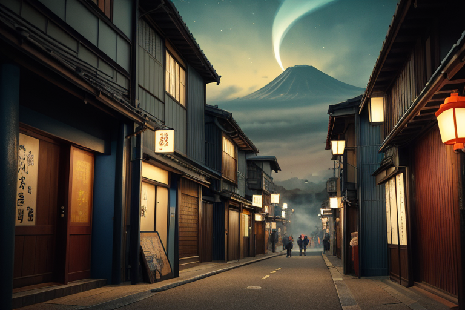
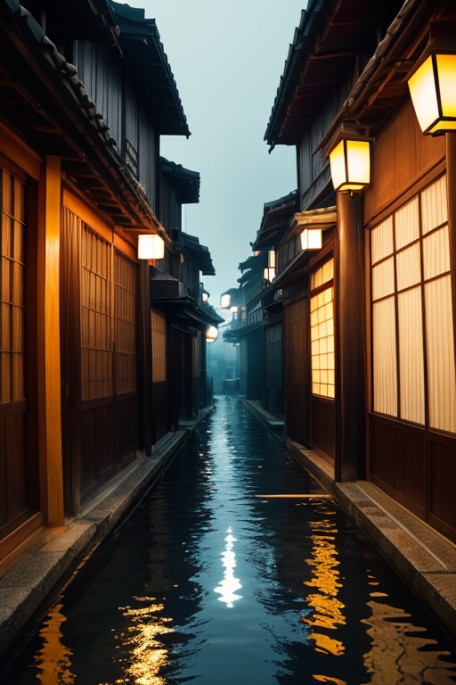
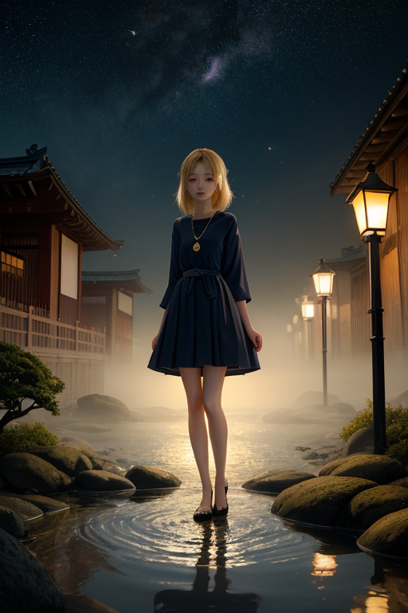
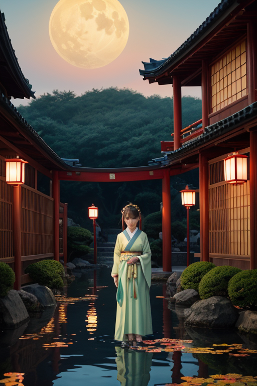

第一章 現実の神奈川
あなたはまだ気づいていない。この土地にも、王がいることを。
横浜中華街の喧噪は、異国の匂いと光に満ちている。しかし、その賑わいの奥、路地裏の静寂に立つと、別の重みを感じる。これは単なる異文化の混淆ではない。1853年、ペリーの黒船がもたらした「開港」という、意志とは無関係な混交の起点。その衝撃は、土地そのものに深い亀裂を残した。港は開かれ、世界が流れ込んだ代償として、何かが封じられた。
湘南の海は穏やかに見える。江ノ島の鳥居をくぐる観光客の笑い声が風に乗る。しかし、王は知っている。この波の下、この土地の基盤には、プレートの「歪み」とは別種の、人の営為が生んだ静かな亀裂が横たわっていることを。混ざることは、時に自らの形を危うくする。箱根の山々が噴煙を静めているように、この土地もまた、沸騰しそうな混沌を内に抱え、静謐を装っている。

第二章 歪みの兆候
横浜中華街の喧噪は、いつもより少しだけ鋭く聞こえた。ノクシアが路地裏に佇み、混ざり合う言語と香料の奔流に眉をひそめる。異文化の交差点であるこの場所は、王国の「調整」が最も頻繁に必要とされる地点の一つだ。しかし今日、彼女の耳には、調和のざわめきの底から、かすかな軋みの音が聞こえていた。それは、物理的なものではない。人々の無意識の隙間、理解と誤解の狭間に生じる、感情の微細な断層だ。
カナガリア・ノクスは三渓園の池の畔に立っていた。水面に映る古い建物の影は、異なる時代と様式がここに移植され、不思議な調和を見せている。彼は掌をかざした。群青色の微光が、池の水面から、地中へと静かに滲んでいく。地質の歪みをなだめる調整作業の最中だった。すると、指先に違和感が走った。地盤の微振動とは別に、もう一つの「抵抗」を感じた。深く、冷たく、長い時間をかけて蓄積された何かが、彼の調整力にほんの少し、引っかかるのだ。
それは、港が封印したものの、うめきだった。
第三章 王の葛藤
横浜中華街の喧噪は、彼の耳には届かない。カナガリア・ノクスは、地下鉄の最深部、地盤と人工構造物の狭間に立ち、目を閉じていた。掌から伸ばした群青の光の糸は、複雑に絡み合う地層とパイプ、ケーブルを縫い、その先で「それ」と繋がっていた。港の底深く、黒い錨のように沈む封印。開港以来、異国の船がもたらした疫病、紛争、文化の激しい衝突──それらが生んだ負の感情の淀みを、歴代の王が圧縮し、封じ込めたものだ。
「解放すべきでしょうか」
ノクシアの声が、思考の中に滑り込んだ。彼女の柔軟な感性は、封印された「混交」そのもののエネルギーに、可能性を感じている。
「否」と、ミナトラの声が重なる。「港は静謐を保たねばなりません。解放は新たな波乱です」
混ざることで何を得る？ 摩擦か、調和か。彼は自問した。これまで彼が司ってきたのは、表層の、穏やかな文化交流だった。湘南の海に溶ける夕陽のように。しかし、この封印の底には、混ざりきらなかったもの、拒絶されたものの澱が眠る。それを解き放てば、確かに新たな「何か」が生まれるかもしれない。しかし、それはこの土地の、か細い均衡を壊す一撃にもなりうる。
彼は、自らの内に芽生えた「不安」という感情を噛みしめた。王たるもの、判断は迅速でなければならない。だが、今、彼の心は混交そのもののように、相反する要素で渦巻いていた。

第四章 妖精との対話
横浜中華街の路地裏、昼間のにぎわいが嘘のように消えた夜更け。ノクシアは古びた石畳に腰を下ろし、混交王を見上げた。
「封印は、拒絶ではありません。『間』を置くための装置です」
彼女の声は、港に漂う夜霧のように静かだった。
「開港の時、この土地にはあまりにも多くの『異質』が、あまりにも短時間に流れ込みました。言葉、習慣、思想…それらが衝突し、時には火花を散らした。混交は祝福であると同時に、時に暴力でもある。当時の王は、港の『受け入れ力』そのものを一時的に封じ、衝突のエネルギーを地中深く沈殿させたのです」
三渓園の池に月影が揺れる。ミナトラが続ける。
「澱は、未消化の可能性。消化されなかった文化の断片、理解されなかった善意、すれ違った言葉の亡骸。それらは確かに力を持っています。解けば、新たな潮流が生まれるでしょう。しかし、その潮流が今の均衡を洗い流すかもしれないという『不安』こそが、殿下に芽生えた感情の正体では？」
混交王は掌を開く。群青色の微光が、掌上のしらすのようにちらつく。
「得るものと、失うものか」
「混ざることで得るものは、常に、何かを失うことの裏側にあるのです」とノクシアが囁いた。「それが、この土地が教えてくれた、混交の真実かもしれません」

第五章 微調整と余韻
混交王は、横浜中華街の路地裏で立ち止まった。軒先に吊るされた赤い提灯が、夕闇に揺れる。ここは、異国の文化が最も濃密に、しかし平穏に混ざり合う場所の一つだ。彼は掌をかざした。群青色の光が、提灯の赤い光と微かに混ざり、路地の空気をほんの少しだけ調整する。港の封印に生じたほころびは、目に見えない文化の衝突の波紋として現れていた。それを、一つひとつ鎮めていく。
代償は、彼自身の内側にあった。これまで感じたことのない「不安」という感情が、彼の調整力を鈍らせはしないか。それでも、掌から放たれる光は確かに、衝突の予感を和らげ、新たな混ざり合いの「間」を創り出していく。
最終的に、王は三渓園の池の畔にたどり着いた。異なる時代の建築が調和する庭園。彼はここで最後の微調整を行った。池の水面に映る月が、金色に揺らめく。封印は修復された。港は静謐を取り戻す。
しかし、王の胸に残った「不安」の余韻は、消えなかった。それは、混ざることで得た、初めての感情の重みだった。失うかもしれないものへの畏れが、これから生まれる混交を、より深く見つめさせる。
あなたの町にも、王がいる。